Créditos das fotos
As fotos das categorias são do Wikimedia Commons e têm licença livre (Creative Commons). Agradecemos aos fotógrafos. As demais imagens do site são geradas, sem equipe ou marca real.
 Fórmula 2Foto: Lukas Raich · CC BY-SA 4.0 · ver no Wikimedia CommonsFIA F2 Austria 2025 Nr. 2 Staněk.jpg
Fórmula 2Foto: Lukas Raich · CC BY-SA 4.0 · ver no Wikimedia CommonsFIA F2 Austria 2025 Nr. 2 Staněk.jpg Fórmula 3Foto: Lukas Raich · CC BY-SA 4.0 · ver no Wikimedia CommonsFIA F3 Austria 2024 Nr. 3 Lindblad.jpg
Fórmula 3Foto: Lukas Raich · CC BY-SA 4.0 · ver no Wikimedia CommonsFIA F3 Austria 2024 Nr. 3 Lindblad.jpg Fórmula EFoto: Byxelized · CC BY-SA 4.0 · ver no Wikimedia CommonsPepe Martí Valencia Formula E Test 2025.jpg
Fórmula EFoto: Byxelized · CC BY-SA 4.0 · ver no Wikimedia CommonsPepe Martí Valencia Formula E Test 2025.jpg IndyCarFoto: Bill Brine · CC BY 2.0 · ver no Wikimedia Commons2024 Grand Prix of St Petersburg Grand (53584098374).jpg
IndyCarFoto: Bill Brine · CC BY 2.0 · ver no Wikimedia Commons2024 Grand Prix of St Petersburg Grand (53584098374).jpg Stock CarFoto: Morio · CC BY-SA 3.0 · ver no Wikimedia CommonsStock Car V8 Brasil 2006 Caca Bueno Mitsubishi Lancer.jpg
Stock CarFoto: Morio · CC BY-SA 3.0 · ver no Wikimedia CommonsStock Car V8 Brasil 2006 Caca Bueno Mitsubishi Lancer.jpg Porsche CupFoto: MarcelX42 · CC BY-SA 4.0 · ver no Wikimedia CommonsPorsche Carrera Cup Benelux 2023 Spa-Francorchamps Ombra Racing Porsche 911 GT3 Cup (992) No.10 Pietro Armanni (DSC06969).jpg
Porsche CupFoto: MarcelX42 · CC BY-SA 4.0 · ver no Wikimedia CommonsPorsche Carrera Cup Benelux 2023 Spa-Francorchamps Ombra Racing Porsche 911 GT3 Cup (992) No.10 Pietro Armanni (DSC06969).jpg NASCARFoto: TaurusEmerald · CC BY-SA 4.0 · ver no Wikimedia CommonsNASCAR Cup Series 24 Next Gen Showcar.jpg
NASCARFoto: TaurusEmerald · CC BY-SA 4.0 · ver no Wikimedia CommonsNASCAR Cup Series 24 Next Gen Showcar.jpg DTMFoto: Steffen Prößdorf · CC BY-SA 4.0 · ver no Wikimedia Commons2025-04-26 Motorsport, DTM, Oschersleben STP 3084.jpg
DTMFoto: Steffen Prößdorf · CC BY-SA 4.0 · ver no Wikimedia Commons2025-04-26 Motorsport, DTM, Oschersleben STP 3084.jpg EnduranceFoto: MarcelX42 · CC BY-SA 4.0 · ver no Wikimedia Commons2024 6 Hours of Spa-Francorchamps Porsche Penske Motorsport Porsche 963 No.6 (DSC06324).jpg
EnduranceFoto: MarcelX42 · CC BY-SA 4.0 · ver no Wikimedia Commons2024 6 Hours of Spa-Francorchamps Porsche Penske Motorsport Porsche 963 No.6 (DSC06324).jpg Le MansFoto: Mickael Le rouzic · CC BY 4.0 · ver no Wikimedia Commons2025 24 Hours of Le Mans (54917513578).jpg
Le MansFoto: Mickael Le rouzic · CC BY 4.0 · ver no Wikimedia Commons2025 24 Hours of Le Mans (54917513578).jpg IMSAFoto: Osajus Photography from Asheville, NC, United States · CC BY 2.0 · ver no Wikimedia CommonsDSC0782 (52679523460).jpg
IMSAFoto: Osajus Photography from Asheville, NC, United States · CC BY 2.0 · ver no Wikimedia CommonsDSC0782 (52679523460).jpg RallyFoto: komiknm komik video · CC BY 3.0 · ver no Wikimedia CommonsThierry Neuville - Rajd Chorwacji 2024.png
RallyFoto: komiknm komik video · CC BY 3.0 · ver no Wikimedia CommonsThierry Neuville - Rajd Chorwacji 2024.png Rally DakarFoto: Global IPCS · CC BY 3.0 · ver no Wikimedia CommonsGlobal IPCS (Camiones) - Dakar 2018 - Perú - Kamaz.jpg
Rally DakarFoto: Global IPCS · CC BY 3.0 · ver no Wikimedia CommonsGlobal IPCS (Camiones) - Dakar 2018 - Perú - Kamaz.jpg MotoGPFoto: Liauzh · CC BY-SA 4.0 · ver no Wikimedia CommonsMotoGP 2025 Malaysian Grand Prix - Ducati Lenovo - Francesco Bagnaia.jpg
MotoGPFoto: Liauzh · CC BY-SA 4.0 · ver no Wikimedia CommonsMotoGP 2025 Malaysian Grand Prix - Ducati Lenovo - Francesco Bagnaia.jpg SuperbikeFoto: Jared Earle/MotoRaceReports · CC BY 3.0 · ver no Wikimedia CommonsMax Biaggi 2011 SBK Donington.jpg
SuperbikeFoto: Jared Earle/MotoRaceReports · CC BY 3.0 · ver no Wikimedia CommonsMax Biaggi 2011 SBK Donington.jpg MotocrossFoto: Domiyanto1977 · CC BY-SA 4.0 · ver no Wikimedia CommonsKompetisi Motocross MXGP di Pangkal Pinang Indonesia.jpg
MotocrossFoto: Domiyanto1977 · CC BY-SA 4.0 · ver no Wikimedia CommonsKompetisi Motocross MXGP di Pangkal Pinang Indonesia.jpg Fórmula 1Foto: Liauzh · CC BY 4.0 · ver no Wikimedia Commons2026 Chinese GP - Red Bull - Max Verstappen - Qualifying.jpg
Fórmula 1Foto: Liauzh · CC BY 4.0 · ver no Wikimedia Commons2026 Chinese GP - Red Bull - Max Verstappen - Qualifying.jpg Fórmula 1Foto: Liauzh · CC BY 4.0 · ver no Wikimedia Commons2026 Chinese GP - Ferrari - Lewis Hamilton - Qualifying.jpg
Fórmula 1Foto: Liauzh · CC BY 4.0 · ver no Wikimedia Commons2026 Chinese GP - Ferrari - Lewis Hamilton - Qualifying.jpg Fórmula 1Foto: Liauzh · CC BY 4.0 · ver no Wikimedia Commons2026 Chinese GP - Audi - Gabriel Bortoleto - Qualifying.jpg
Fórmula 1Foto: Liauzh · CC BY 4.0 · ver no Wikimedia Commons2026 Chinese GP - Audi - Gabriel Bortoleto - Qualifying.jpg Fórmula 1Foto: Liauzh · CC BY 4.0 · ver no Wikimedia Commons2026 Chinese GP - Mercedes - George Russell - Qualifying.jpg
Fórmula 1Foto: Liauzh · CC BY 4.0 · ver no Wikimedia Commons2026 Chinese GP - Mercedes - George Russell - Qualifying.jpg Fórmula 1Foto: Liauzh · CC BY 4.0 · ver no Wikimedia Commons2026 Chinese GP - Mercedes - Kimi Antonelli - Qualifying.jpg
Fórmula 1Foto: Liauzh · CC BY 4.0 · ver no Wikimedia Commons2026 Chinese GP - Mercedes - Kimi Antonelli - Qualifying.jpg Fórmula 1Foto: Liauzh · CC BY 4.0 · ver no Wikimedia Commons2026 Chinese GP - McLaren - Lando Norris - Qualifying.jpg
Fórmula 1Foto: Liauzh · CC BY 4.0 · ver no Wikimedia Commons2026 Chinese GP - McLaren - Lando Norris - Qualifying.jpg Fórmula 1Foto: Liauzh · CC BY 4.0 · ver no Wikimedia Commons2026 Chinese GP - McLaren - Oscar Piastri - Qualifying.jpg
Fórmula 1Foto: Liauzh · CC BY 4.0 · ver no Wikimedia Commons2026 Chinese GP - McLaren - Oscar Piastri - Qualifying.jpg Fórmula 1Foto: Liauzh · CC BY 4.0 · ver no Wikimedia Commons2026 Chinese GP - Cadillac - Valtteri Bottas - Qualifying.jpg
Fórmula 1Foto: Liauzh · CC BY 4.0 · ver no Wikimedia Commons2026 Chinese GP - Cadillac - Valtteri Bottas - Qualifying.jpg Fórmula 1Foto: Liauzh · CC BY 4.0 · ver no Wikimedia Commons2026 Chinese GP - Haas - Esteban Ocon - Qualifying.jpg
Fórmula 1Foto: Liauzh · CC BY 4.0 · ver no Wikimedia Commons2026 Chinese GP - Haas - Esteban Ocon - Qualifying.jpg Fórmula 1Foto: Liauzh · CC BY 4.0 · ver no Wikimedia Commons2026 Chinese GP - Racing Bulls - Arvid Lindblad - Qualifying.jpg
Fórmula 1Foto: Liauzh · CC BY 4.0 · ver no Wikimedia Commons2026 Chinese GP - Racing Bulls - Arvid Lindblad - Qualifying.jpg Fórmula 1Foto: Liauzh · CC BY 4.0 · ver no Wikimedia Commons2026 Chinese GP - Red Bull - Isack Hadjar - Sprint Qualifying.jpg
Fórmula 1Foto: Liauzh · CC BY 4.0 · ver no Wikimedia Commons2026 Chinese GP - Red Bull - Isack Hadjar - Sprint Qualifying.jpg Fórmula 2Foto: Lukas Raich · CC BY-SA 4.0 · ver no Wikimedia CommonsFIA F2 Austria 2025 Nr. 6 Verschoor.jpg
Fórmula 2Foto: Lukas Raich · CC BY-SA 4.0 · ver no Wikimedia CommonsFIA F2 Austria 2025 Nr. 6 Verschoor.jpg Fórmula 2Foto: Lukas Raich · CC BY-SA 4.0 · ver no Wikimedia CommonsFIA F2 Austria 2025 Nr. 11 Crawford.jpg
Fórmula 2Foto: Lukas Raich · CC BY-SA 4.0 · ver no Wikimedia CommonsFIA F2 Austria 2025 Nr. 11 Crawford.jpg Fórmula 2Foto: Lukas Raich · CC BY-SA 4.0 · ver no Wikimedia CommonsFIA F2 Austria 2025 Nr. 12 Maini.jpg
Fórmula 2Foto: Lukas Raich · CC BY-SA 4.0 · ver no Wikimedia CommonsFIA F2 Austria 2025 Nr. 12 Maini.jpg Fórmula 3Foto: Lukas Raich · CC BY-SA 4.0 · ver no Wikimedia CommonsFIA F3 Austria 2024 Nr. 1 Beganovic.jpg
Fórmula 3Foto: Lukas Raich · CC BY-SA 4.0 · ver no Wikimedia CommonsFIA F3 Austria 2024 Nr. 1 Beganovic.jpg Fórmula 3Foto: Lukas Raich · CC BY-SA 4.0 · ver no Wikimedia CommonsFIA F3 Austria 2024 Nr. 2 Mini.jpg
Fórmula 3Foto: Lukas Raich · CC BY-SA 4.0 · ver no Wikimedia CommonsFIA F3 Austria 2024 Nr. 2 Mini.jpg Fórmula 3Foto: Lukas Raich · CC BY-SA 4.0 · ver no Wikimedia CommonsFIA F3 Austria 2024 Nr. 4 Fornaroli.jpg
Fórmula 3Foto: Lukas Raich · CC BY-SA 4.0 · ver no Wikimedia CommonsFIA F3 Austria 2024 Nr. 4 Fornaroli.jpg Fórmula EFoto: Steffen Prößdorf · CC BY-SA 4.0 · ver no Wikimedia Commons2025-07-11 Motorsport, ABB FIA Formula E World Championship, Berlin E-Prix 2025 STP 0075.jpg
Fórmula EFoto: Steffen Prößdorf · CC BY-SA 4.0 · ver no Wikimedia Commons2025-07-11 Motorsport, ABB FIA Formula E World Championship, Berlin E-Prix 2025 STP 0075.jpg IndyCarFoto: Bill Brine · CC BY 2.0 · ver no Wikimedia Commons2024 Grand Prix of St Petersburg Grand (53583774396).jpg
IndyCarFoto: Bill Brine · CC BY 2.0 · ver no Wikimedia Commons2024 Grand Prix of St Petersburg Grand (53583774396).jpg IndyCarFoto: Bill Brine · CC BY 2.0 · ver no Wikimedia Commons2024 Grand Prix of St Petersburg Grand (53584100724).jpg
IndyCarFoto: Bill Brine · CC BY 2.0 · ver no Wikimedia Commons2024 Grand Prix of St Petersburg Grand (53584100724).jpg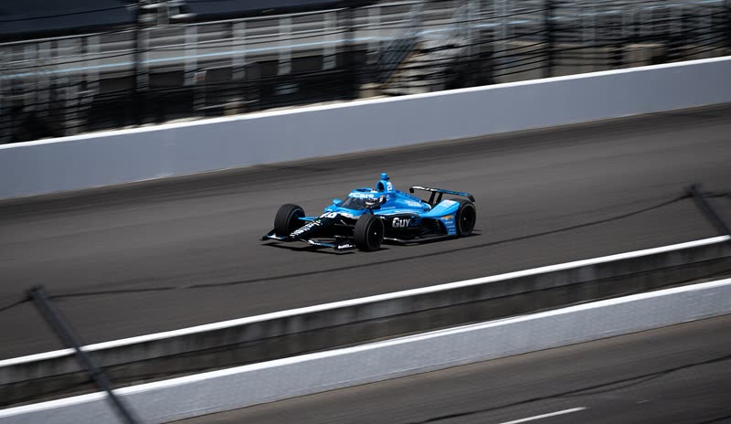
IndyCarFoto: NASA Headquarters / NASA/Joel Kowsky · Public domain · ver no Wikimedia Commons2024 Total Solar Eclipse (NHQ202404080350).jpg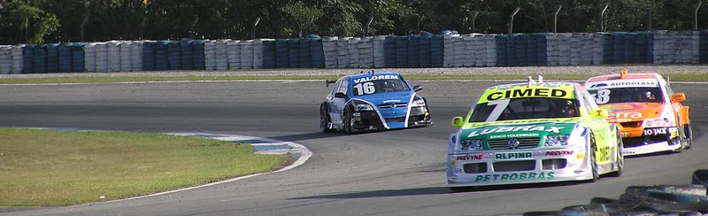
Stock CarFoto: Morio · CC BY-SA 3.0 · ver no Wikimedia CommonsStock Car V8 Brasil 2006 Curitiba.jpg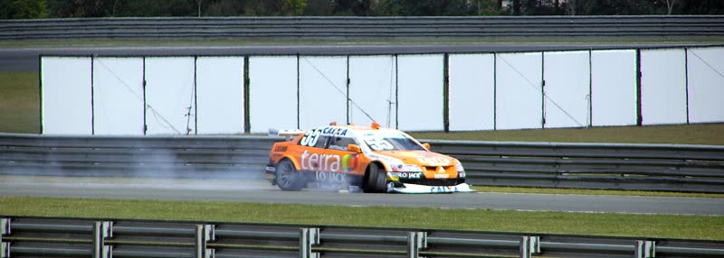
Stock CarFoto: Morio · CC BY-SA 3.0 · ver no Wikimedia CommonsStock Car V8 Brasil 2006 Round 2 Christian Fittipaldi.jpg Porsche CupFoto: Charles from Port Chester, New York · CC BY 2.0 · ver no Wikimedia CommonsPorsche 911 GT3 (992, 2022) (52573993502).jpg
Porsche CupFoto: Charles from Port Chester, New York · CC BY 2.0 · ver no Wikimedia CommonsPorsche 911 GT3 (992, 2022) (52573993502).jpg Porsche CupFoto: MarcelX42 · CC BY-SA 4.0 · ver no Wikimedia CommonsPorsche Carrera Cup Benelux 2023 Spa-Francorchamps Ombra Racing Porsche 911 GT3 Cup (992) No.18 Keagan Masters (DSC06980).jpg
Porsche CupFoto: MarcelX42 · CC BY-SA 4.0 · ver no Wikimedia CommonsPorsche Carrera Cup Benelux 2023 Spa-Francorchamps Ombra Racing Porsche 911 GT3 Cup (992) No.18 Keagan Masters (DSC06980).jpg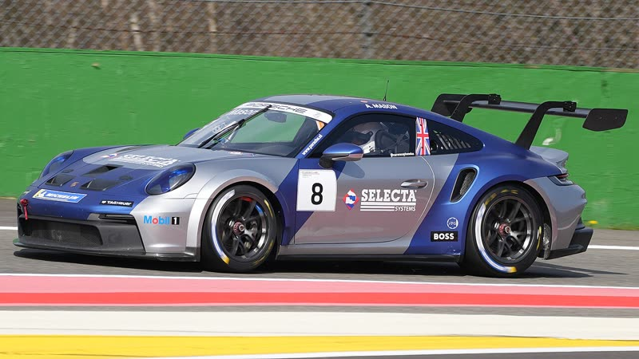
Porsche CupFoto: MarcelX42 · CC BY-SA 4.0 · ver no Wikimedia CommonsPorsche Carrera Cup Benelux 2023 Spa-Francorchamps Revs Motorsport Porsche 911 GT3 Cup (992) No.8 Aaron Mason (DSC07232).jpg Porsche CupFoto: MarcelX42 · CC BY-SA 4.0 · ver no Wikimedia CommonsPorsche Carrera Cup Benelux 2023 Spa-Francorchamps Team GP Elite Porsche 911 GT3 Cup (992) No.12 Maik Rosenberg (DSC07095).jpg
Porsche CupFoto: MarcelX42 · CC BY-SA 4.0 · ver no Wikimedia CommonsPorsche Carrera Cup Benelux 2023 Spa-Francorchamps Team GP Elite Porsche 911 GT3 Cup (992) No.12 Maik Rosenberg (DSC07095).jpg NASCARFoto: TaurusEmerald · CC BY-SA 4.0 · ver no Wikimedia CommonsJiffy Lube Pennzoil Ford Mustang NASCAR Showcar.jpg
NASCARFoto: TaurusEmerald · CC BY-SA 4.0 · ver no Wikimedia CommonsJiffy Lube Pennzoil Ford Mustang NASCAR Showcar.jpg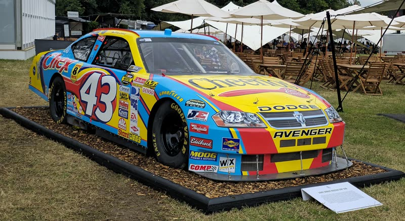
NASCARFoto: Calreyn88 · CC BY-SA 4.0 · ver no Wikimedia Commons2007 Dodge Avenger NASCAR.jpg DTMFoto: Steffen Prößdorf · CC BY-SA 4.0 · ver no Wikimedia Commons2025-04-26 Motorsport, DTM, Oschersleben STP 3060.jpg
DTMFoto: Steffen Prößdorf · CC BY-SA 4.0 · ver no Wikimedia Commons2025-04-26 Motorsport, DTM, Oschersleben STP 3060.jpg DTMFoto: Steffen Prößdorf · CC BY-SA 4.0 · ver no Wikimedia Commons2025-04-26 Motorsport, DTM, Oschersleben STP 3076.jpg
DTMFoto: Steffen Prößdorf · CC BY-SA 4.0 · ver no Wikimedia Commons2025-04-26 Motorsport, DTM, Oschersleben STP 3076.jpg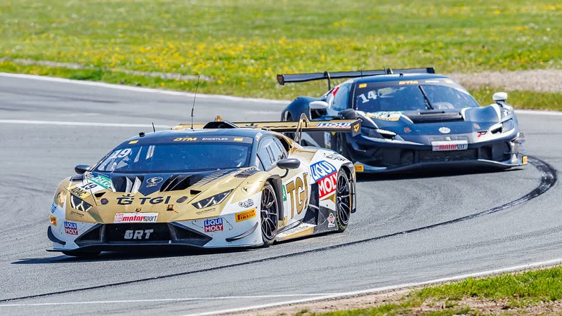
DTMFoto: Steffen Prößdorf · CC BY-SA 4.0 · ver no Wikimedia Commons2025-04-26 Motorsport, DTM, Oschersleben STP 3088.jpg EnduranceFoto: Mickael Le rouzic · CC BY 4.0 · ver no Wikimedia Commons2025 24 Hours of Le Mans (54916433957).jpg
EnduranceFoto: Mickael Le rouzic · CC BY 4.0 · ver no Wikimedia Commons2025 24 Hours of Le Mans (54916433957).jpg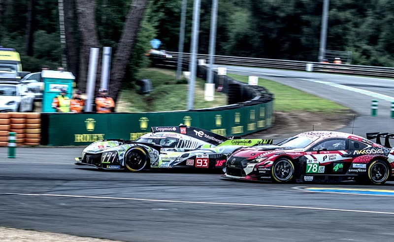
EnduranceFoto: Mickael Le rouzic · CC BY 4.0 · ver no Wikimedia Commons2025 24 Hours of Le Mans (54917597525).jpg Le MansFoto: Mickael Le rouzic · CC BY 4.0 · ver no Wikimedia Commons2025 24 Hours of Le Mans (54917297041).jpg
Le MansFoto: Mickael Le rouzic · CC BY 4.0 · ver no Wikimedia Commons2025 24 Hours of Le Mans (54917297041).jpg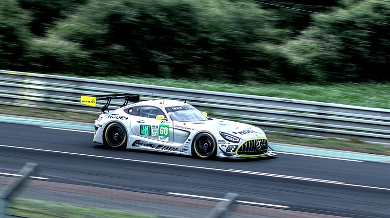
Le MansFoto: Mickael Le rouzic · CC BY 4.0 · ver no Wikimedia Commons2025 24 Hours of Le Mans (54917547789).jpg Le MansFoto: Mickael Le rouzic · CC BY 4.0 · ver no Wikimedia Commons2025 24 Hours of Le Mans (54917295581).jpg
Le MansFoto: Mickael Le rouzic · CC BY 4.0 · ver no Wikimedia Commons2025 24 Hours of Le Mans (54917295581).jpg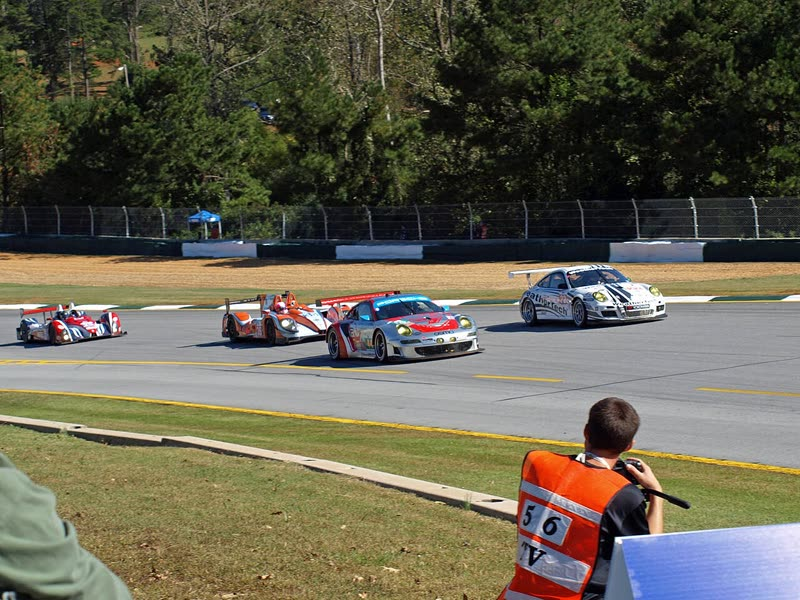
IMSAFoto: Chris Pruitt · CC BY-SA 3.0 · ver no Wikimedia CommonsPLM12 Turn 1 action.jpg IMSAFoto: TorontoGuy79 · CC BY-SA 4.0 · ver no Wikimedia CommonsMazda Team Joest Mazda RT24-P - Winner 2019 SportsCar Grand Prix.jpg
IMSAFoto: TorontoGuy79 · CC BY-SA 4.0 · ver no Wikimedia CommonsMazda Team Joest Mazda RT24-P - Winner 2019 SportsCar Grand Prix.jpg IMSAFoto: MIDWST.BLUR · CC BY 2.0 · ver no Wikimedia CommonsWet Pass (52571942281).jpg
IMSAFoto: MIDWST.BLUR · CC BY 2.0 · ver no Wikimedia CommonsWet Pass (52571942281).jpg RallyFoto: komiknm komik video · CC BY 3.0 · ver no Wikimedia CommonsOgier Rajd Chorwacji 20224.png
RallyFoto: komiknm komik video · CC BY 3.0 · ver no Wikimedia CommonsOgier Rajd Chorwacji 20224.png RallyFoto: Antti Leppänen · CC BY 4.0 · ver no Wikimedia CommonsOtt Tänak Rally Finland 2025 Ouninpohja.jpg
RallyFoto: Antti Leppänen · CC BY 4.0 · ver no Wikimedia CommonsOtt Tänak Rally Finland 2025 Ouninpohja.jpg RallyFoto: Antti Leppänen · CC BY 4.0 · ver no Wikimedia CommonsJosh McErlean Rally Finland 2025 Ouninpohja.jpg
RallyFoto: Antti Leppänen · CC BY 4.0 · ver no Wikimedia CommonsJosh McErlean Rally Finland 2025 Ouninpohja.jpg MotoGPFoto: Liauzh · CC BY-SA 4.0 · ver no Wikimedia CommonsMotoGP 2025 Malaysian Grand Prix - Ducati Lenovo - Michele Pirro.jpg
MotoGPFoto: Liauzh · CC BY-SA 4.0 · ver no Wikimedia CommonsMotoGP 2025 Malaysian Grand Prix - Ducati Lenovo - Michele Pirro.jpg MotoGPFoto: Liauzh · CC BY-SA 4.0 · ver no Wikimedia CommonsMotoGP 2025 Malaysian Grand Prix - VR46 Racing Team - Fabio Di Giannantonio.jpg
MotoGPFoto: Liauzh · CC BY-SA 4.0 · ver no Wikimedia CommonsMotoGP 2025 Malaysian Grand Prix - VR46 Racing Team - Fabio Di Giannantonio.jpg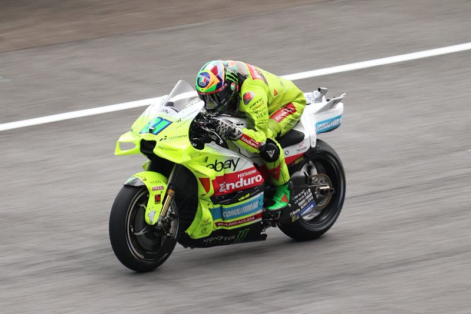
MotoGPFoto: Liauzh · CC BY-SA 4.0 · ver no Wikimedia CommonsMotoGP 2025 Malaysian Grand Prix - VR46 Racing Team - Franco Morbidelli.jpg SuperbikeFoto: TOM. Original uploader was Alfonso Galuba at it.wikipedia · CC BY-SA 3.0 · ver no Wikimedia CommonsLeon Haslam 2009 SBK Donington.JPG
SuperbikeFoto: TOM. Original uploader was Alfonso Galuba at it.wikipedia · CC BY-SA 3.0 · ver no Wikimedia CommonsLeon Haslam 2009 SBK Donington.JPG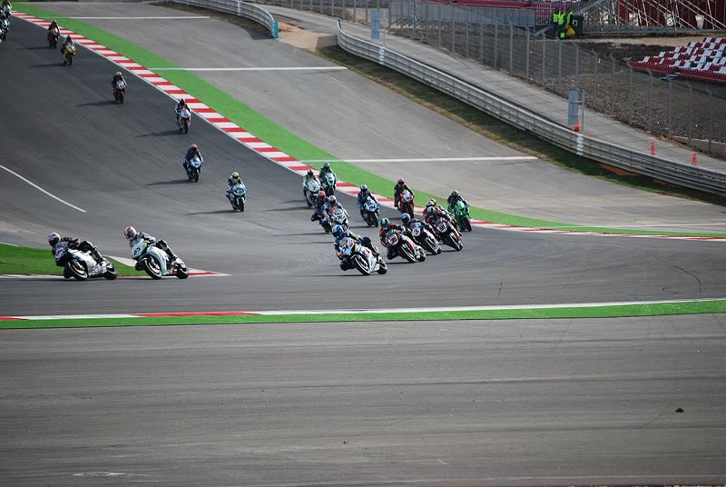
SuperbikeFoto: Tiago J. G. Fernandes from Portimão, Portugal · CC BY 2.0 · ver no Wikimedia CommonsWSBK - Algarve (3037521399).jpg MotocrossFoto: Gerardroses · Public domain · ver no Wikimedia CommonsArcs mx1 2009.JPG
MotocrossFoto: Gerardroses · Public domain · ver no Wikimedia CommonsArcs mx1 2009.JPG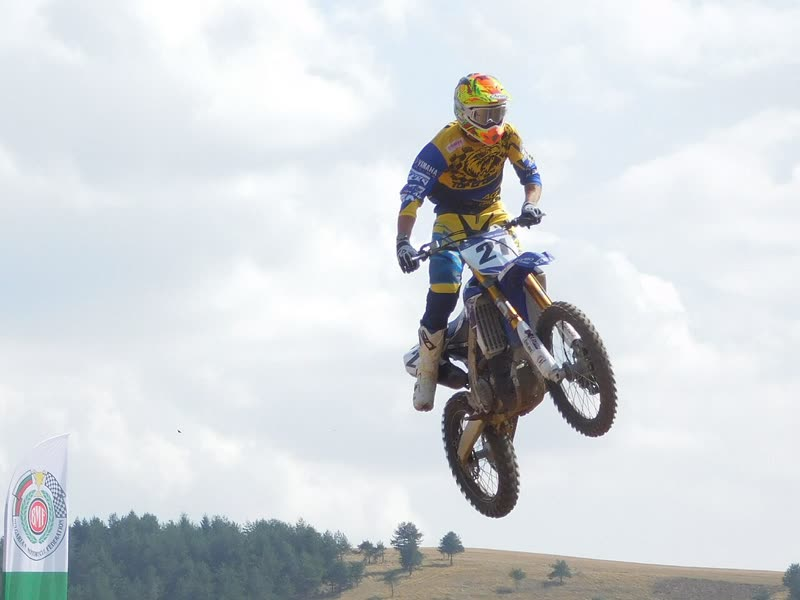
MotocrossFoto: Plamenka Lykanova · CC BY-SA 2.5 · ver no Wikimedia CommonsAdrian Răduță, campion Național MX1.jpg